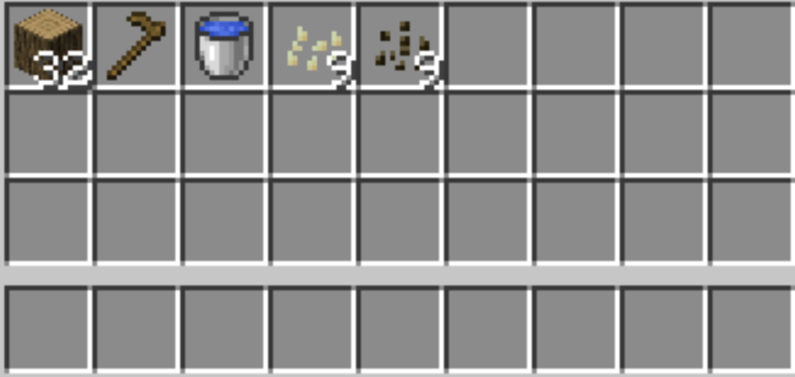
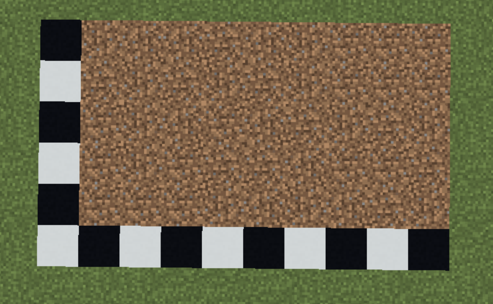
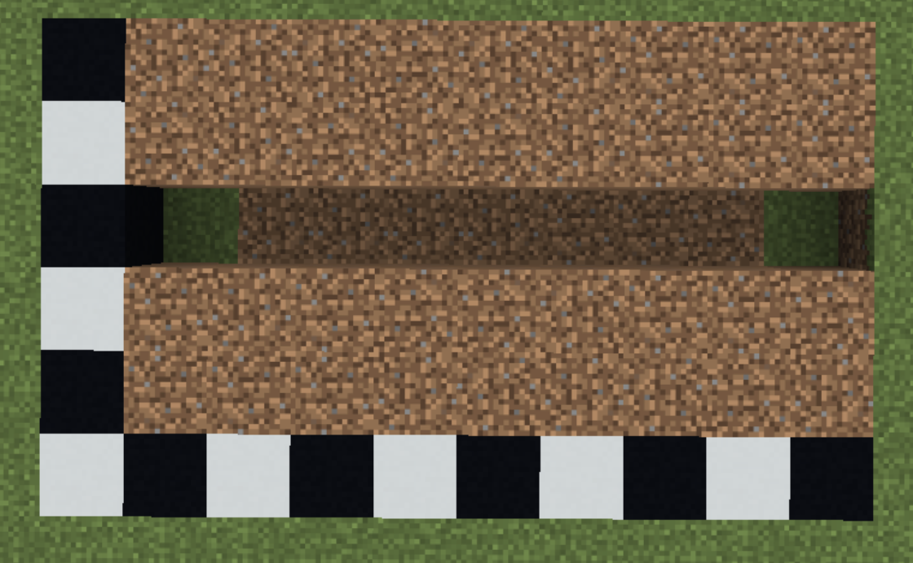
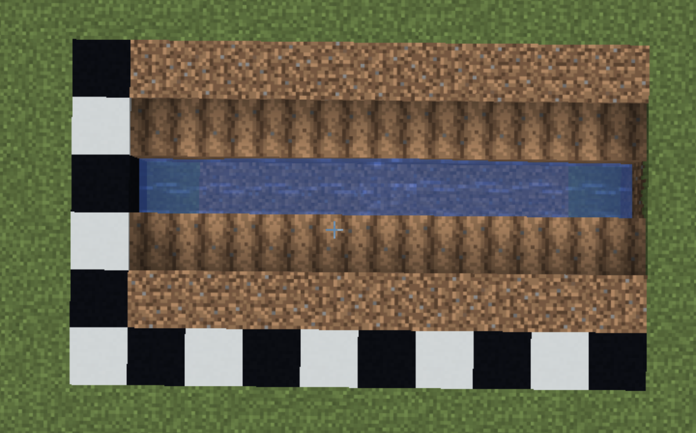
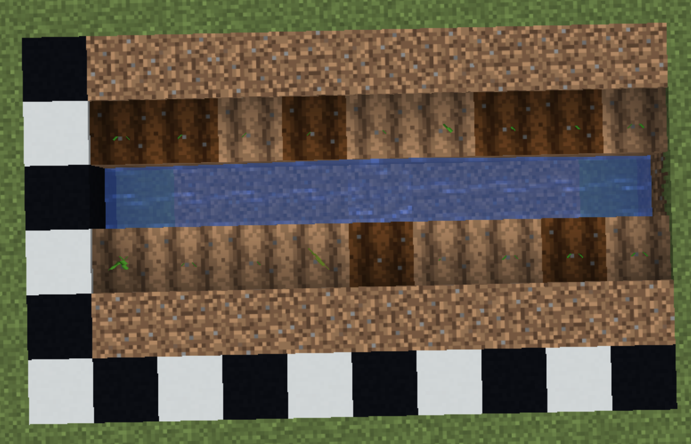
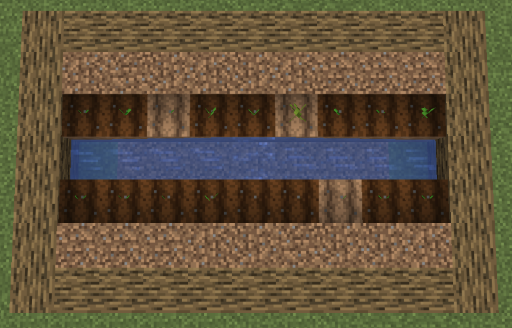
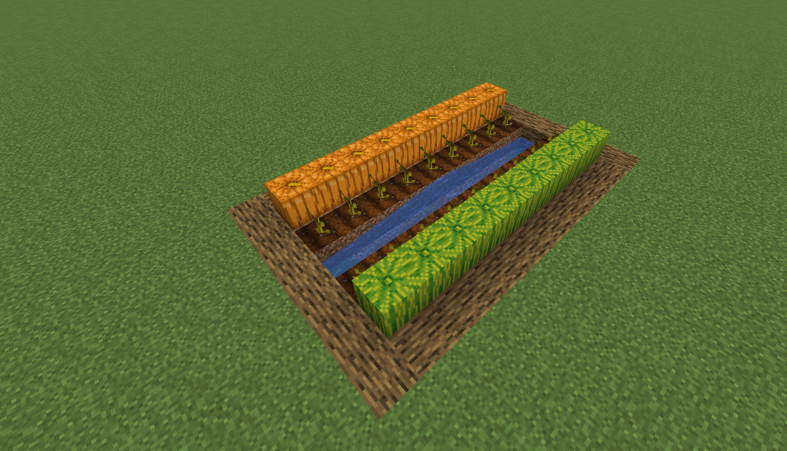

Part 3: Building a Farm
Now that you have a house and basic resources, it is time to set up a reliable food source. Melon and pumpkin farms are one of the easiest farms to build in Minecraft. Once built, they will continuously grow crops.
How Melons and Pumpkins Grow
Melon and pumpkin seeds must be planted on farmland. Once the stem is fully grown, it will attempt to grow a melon or pumpkin on an open adjacent dirt, grass, or farmland block. The stem will continue to produce new fruit after the old fruit has been harvested.
Finding Seeds
Melon and pumpkin seeds can be found in loot chests in dungeons, mineshafts and woodland mansions. Sometimes, pumpkins and melons naturally generate in villages and jungle biomes; you can place a melon or pumpkin in your crafting slot to obtain seeds.
Materials
This farm uses a simple row-based design that can be expanded as needed.
Complete Materials List:
- 18x Melon Seeds and/or Pumpkin Seeds
- 1x Water Bucket
- 1x Hoe (any material)
- 32x Building Blocks (for border, any type of block)

Construction
-
1. Find a flat area near your house. Clear out a 5 wide by 9 long area.

-
2. Dig a 1-block trench down the center of the long side (1 wide, 9 long). This is where the water will go.

-
3. Fill the trench with water using your bucket. Water hydrates farmland up to 4 blocks away; hydrated farmland speeds up the growth of crops.

-
4. Use your hoe on the dirt blocks directly next to the water on both sides (right click the dirt). This creates farmland. Only till the row immediately next to the water — these are the planting rows. Leave the next row on each side as regular dirt or grass. Do not till these blocks. This is where the melons and pumpkins will grow onto.

-
5. Plant melon or pumpkin seeds on the tilled farmland by right clicking with seeds in hand.

-
6. Place building blocks around the outer border to prevent crops from growing outside the farm area; this guide used oak logs as the border.

Harvesting
Once the stems are fully grown, melon and pumpkin blocks will begin appearing on the dirt rows next to the stems. To harvest, break the melon or pumpkin block. Do not break the stem — it will continue to produce new crops.

Tips and Fun Facts
- Since each stem can only grow one fruit at a time, harvest regularly to keep production going.
- You can use bone meal on stems to speed up their growth, but once the stem has fully matured, bone meal will no longer work. It will not speed up fruit production.
- Pumpkins can be worn as a helmet or crafted into jack o’lanterns and pumpkin pie.
- Melons drop as melon slices when broken, but pumpkins drop as a whole pumpkin when broken.
- To expand the farm, repeat the same water-farmland-dirt pattern in additional rows.